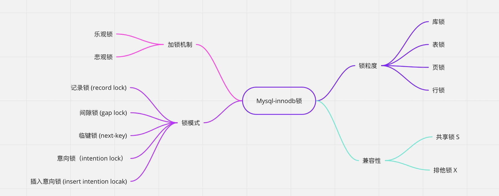
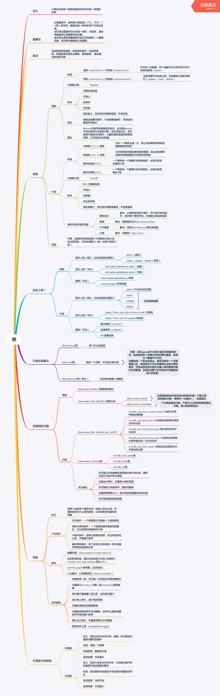

“Only do what your heart tells you. ”
业务死锁背景
今天有用户反应后台系统时快时慢的，于是上服务器看了下日志。发现了很多死锁的异常情况，异常日志如下
1 | com.mysql.cj.jdbc.exceptions.MySQLTransactionRollbackException: Deadlock found when trying to get lock; try restarting transaction |
在分析死锁的原因之前，先了解一下mysql的锁
锁的分类
通过查看mysql的官方文档，其中InnoDB引擎锁分为以下几种
Shared and Exclusive Locks [共享锁和独占锁]
- 共享 (
S) 锁允许持有锁的事务读取一行。 - 独占 (
X) 锁允许持有锁的事务更新或删除行。
- 共享 (
Intention Locks [意向锁]
- 意向共享锁 (
IS) 表示事务打算在表中的各个行上设置共享锁。 - 意向排他锁 (
IX) 表示事务打算在表中的各个行上设置排他锁。
- 意向共享锁 (
Record Locks [记录锁]
Gap Locks [间隙锁]
Next-Key Locks [下一键锁]
Insert Intention Locks [插入意向锁]
AUTO-INC Locks [AUTO-INC锁]
Predicate Locks for Spatial Indexes [空间索引的谓词锁]
InnoDB行锁模式兼容性列表：
| 当前锁模式/是否兼容/请求锁模式 | X | IX | S | IS |
|---|---|---|---|---|
| X | 冲突 | 冲突 | 冲突 | 冲突 |
| IX | 冲突 | 兼容 | 冲突 | 兼容 |
| S | 冲突 | 冲突 | 兼容 | 兼容 |
| IS | 冲突 | 兼容 | 兼容 | 兼容 |
如果一个事务请求的锁模式与当前的锁兼容，InnoDB就请求的锁授予该事务；反之，如果两者两者不兼容，该事务就要等待锁释放。
 innodb锁mysql锁和隔离级别的关系
对于mysql来说主要关注两个隔离级别的区别
READ COMMITTED读以提交
For locking reads (SELECT with FOR UPDATE or FOR SHARE), UPDATE statements, and DELETE statements, InnoDB locks only index records, not the gaps before them, and thus permits the free insertion of new records next to locked records. Gap locking is only used for foreign-key constraint checking and duplicate-key checking.
Using
READ COMMITTEDhas additional effects:
- For
UPDATEorDELETEstatements,InnoDBholds locks only for rows that it updates or deletes. Record locks for nonmatching rows are released after MySQL has evaluated theWHEREcondition. This greatly reduces the probability of deadlocks, but they can still happen.- For
UPDATEstatements, if a row is already locked,InnoDBperforms a “semi-consistent” read, returning the latest committed version to MySQL so that MySQL can determine whether the row matches theWHEREcondition of theUPDATE. If the row matches (must be updated), MySQL reads the row again and this timeInnoDBeither locks it or waits for a lock on it.
以上是mysql文档中对READ COMMITTED加锁类型的解释，大致意思如下：
对于锁定读取（
SELECT与FOR UPDATE或FOR SHARE）、FOR UPDATE语句和FOR SHARE语句，InnoDB仅锁定索引记录，而不锁定它们之前的间隙，因此允许自由插入新的锁定记录旁边的记录。间隙锁定仅用于外键约束检查和重复键检查。
使用 READ COMMITTED 有额外的效果：
对于
UPDATE或DELETE语句，InnoDB仅对其更新或删除的行持有锁。在 MySQL 评估了WHERE条件后，释放不匹配行的记录锁。这大大降低了死锁的可能性，但它们仍然会发生。对于
UPDATE语句，如果一行已经被锁定，InnoDB执行“半一致”读取，将最新提交的版本返回给MySQL，以便MySQL判断该行是否匹配@1的WHERE条件# 。如果该行匹配（必须更新），MySQL 将再次读取该行，这次InnoDB要么锁定它，要么等待锁定它。
REPEATABLE READ(可重复读)
For locking reads (
SELECTwithFOR UPDATEorFOR SHARE),UPDATE, andDELETEstatements, locking depends on whether the statement uses a unique index with a unique search condition, or a range-type search condition.
For a unique index with a unique search condition,
InnoDBlocks only the index record found, not the gap before it.For other search conditions,
InnoDBlocks the index range scanned, using gap locks or next-key locks to block insertions by other sessions into the gaps covered by the range. For information about gap locks and next-key locks, see Section 15.7.1, “InnoDB Locking”.
以上是mysql文档中对REPEATABLE READ加锁类型的解释，大致意思如下：
对于锁定读取（
SELECT与FOR UPDATE或FOR SHARE）、FOR UPDATE和FOR SHARE语句，锁定取决于语句是使用具有唯一搜索条件的唯一索引，还是范围类型的搜索条件.
- 对于具有唯一搜索条件的唯一索引， InnoDB 只锁定找到的索引记录，而不锁定其之前的间隙。
- 对于其他搜索条件，
InnoDB锁定扫描的索引范围，使用间隙锁或next-key锁来阻止其他会话插入到该范围覆盖的间隙中。有关间隙锁和下一键锁的信息，请参阅第 15.7.1 节，“InnoDB 锁定”。
在RR隔离级别中，我们一般认为可以产生锁的语句为:
SELECT ... FOR UPDATE: X锁SELECT ... LOCK IN SHARE MODE: S锁update/delete: X锁
| 索引 | 场景 | 锁范围 |
|---|---|---|
| 无索引 | S/X锁 | 锁全表 |
| 唯一索引 | 精确匹配，且命中 | 行锁 |
| 唯一索引 | 精确匹配，未命中 | gap lock |
| 唯一索引 | 范围查询 | next key lock (上个记录下个记录的区间，左闭右开） 右边记录行锁 |
| 普通索引 | 精确匹配，且命中 | 行锁 + gap lock (上一个记录和下个记录区间，左闭右开，左边记录非行锁) |
| 普通索引 | 精确匹配，未命中 | gap lock |
| 普通索引 | 范围查询 | next key lock |
锁冲突
上面介绍了不同场景下会产生什么样的锁，但是看完之后会有一个疑问，针对行锁其他会话竞争的时候，可以按照X/S锁的规则来，但是这个GAP LOCK貌似只针对insert有效，insert除了加X锁之外是不是还有其他的特殊逻辑？
插入意向锁
插入意向锁其实是一种特殊的 gap lock，但是它不会阻塞其他锁。假设存在值为 4 和 7 的索引记录，尝试插入值 5 和 6 的两个事务在获取插入行上的排它锁之前使用插入意向锁锁定间隙，即在（4，7）上加 gap lock，但是这两个事务不会互相冲突等待；但是如果这个区间存在gap lock，则会被阻塞；如果多个事务插入相同数据导致唯一冲突，则在重复的索引记录上加读锁
简单来说，它的属性为：
- 它不会阻塞其他任何锁；
- 它本身仅会被 gap lock 阻塞
其次一个重要知识点：
通常insert语句，加的是行锁，排它锁
在insert之前，先通过插入意向锁，判断是否可以插入（仅会被gap lock阻塞）
当插入唯一冲突时，在重复索引上添加读锁
原因如下：
事务1 插入成功未提交，获取了排它锁，但是事务1最终可能会回滚，所以其他重复插入事务不应该直接失败，这个时候他们改为申请读锁（疑问点：为什么要改成读锁呢？）
锁冲突矩阵
简单版矩阵
| 共享锁（S） | 排他锁（X） | |
|---|---|---|
| 共享锁（S） | 兼容 | 冲突 |
| 排他锁（X） | 冲突 | 冲突 |
当我们将gap lock(间隙锁), next key lock(next-key锁), Insert Intention lock(插入意向锁)也加入矩阵时，就会复杂很多了
| 行：待加锁；列：存在锁 | S(not gap) | S(gap) | S(next key) | X(not gap) | X(gap) | X(next key) | Insert Intention |
|---|---|---|---|---|---|---|---|
| S(not gap) | - | - | - | 冲突 | - | 冲突 | - |
| S(gap) | - | - | - | - | - | - | 冲突 |
| S(next-key) | - | - | - | 冲突 | - | 冲突 | 冲突 |
| X(not gap) | 冲突 | - | 冲突 | 冲突 | - | 冲突 | - |
| X(gap) | - | - | - | - | - | - | 冲突 |
| X(next-key) | 冲突 | - | 冲突 | 冲突 | - | 冲突 | 冲突 |
| Insert Intention | - | 冲突 | 冲突 | - | 冲突 | 冲突 | - |
说明
- not gap: 行锁
- gap: gap lock
- next-key: gap + 行锁
小结
针对上面的矩阵，理解下面几个原则即可推导上面矩阵
gap lock只会与插入意向锁冲突- X行锁会与行锁冲突
next key lock: 行锁 + gap锁- 锁区间内，插入冲突；
- 行锁的X锁冲突
INSERT操作之间不会有冲突。
GAP,Next-Key会阻塞插入意向锁INSERT_INTENTION
GAP与Record,Next-Key不会冲突
Record与Record、Next-Key之间相互冲突。
已有的Insert锁不阻止任何准备加的锁。
另外 RR事务隔离级别下,对于通过索引(唯一或者非唯一)更新或者删除不存在的记录，会申请加上gap锁。
当update 更新被索引字段时，相当于删除之后重新插入新的记录，需要重新组织索引节点。
死锁日志分析
mysql使用 SHOW ENGINE INNODB STATUS 查看最后一次死锁的日志
1 | ===================================== |
从以上事务可以分析出
- TRANSACTION(1) lock_mode X locks gap before rec insert intention waiting
- TRANSACTION(2) lock_mode X locks gap before rec
- TRANSACTION(2) lock_mode X locks gap before rec insert intention waiting
- ROLL BACK TRANSACTION (2)
主要的问题在于
当对存在的行进行锁的时候(主键)，mysql就只有行锁。
当对未存在的行进行锁的时候(即使条件为主键)，mysql是会锁住一段范围（有gap锁）
而我的业务正好插入的时候唯一建不一定存在，所以导致gap锁，而插入意向锁不会冲突，所以两个事务都拿到了插入意向锁。而只会有一个事务会获取到gap锁
解决方案
当把死锁的情况分析完成后，其实解决起来就比较简单了
- 修改隔离级别，避免间隙锁(只有RR级别有间隙锁)
- 加入分布式锁，如：redis，zookpper等。即减少并发
- 并发插入时使用replace/on duplicate也可以避免死锁
参考链接
总结
 锁总结—— author.zero 后记于 2023.2.25